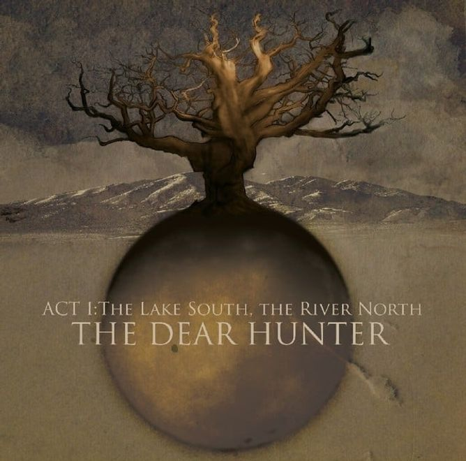
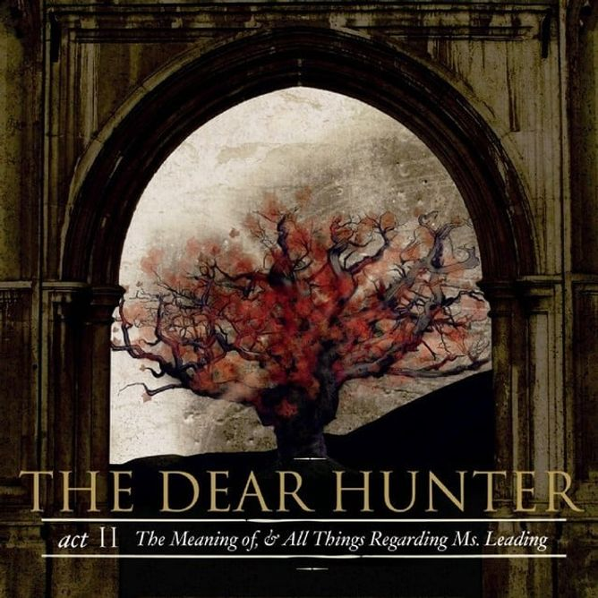
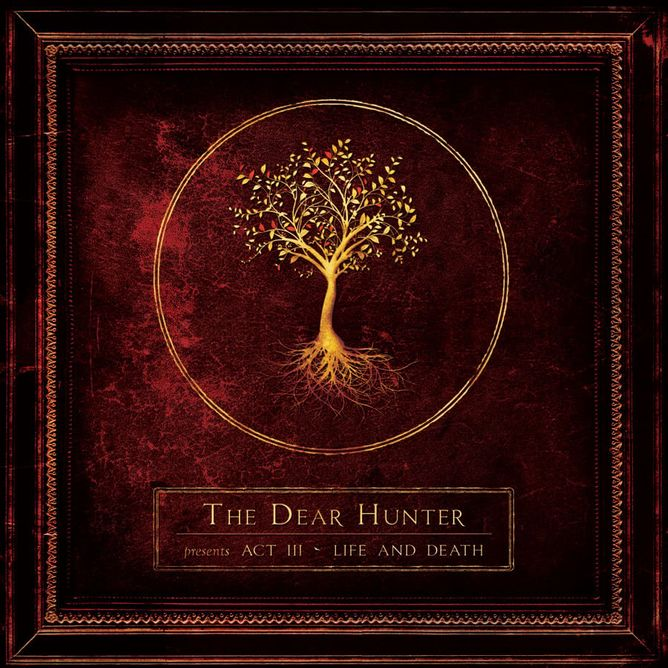
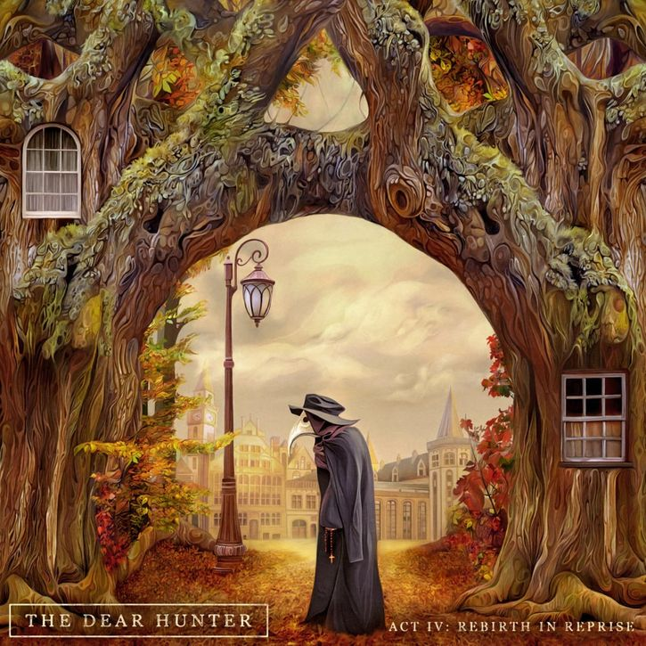
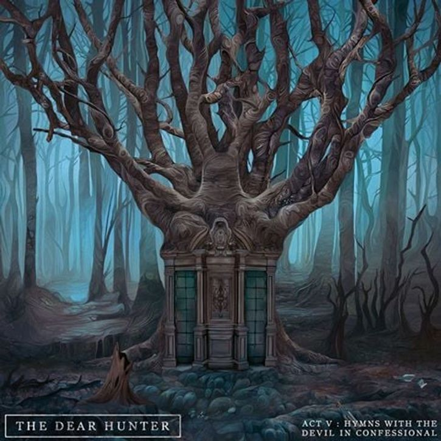

The Dear Hunter es un grupo de rock alternativo creado por el cantante y compositor Cassey Crescenzo en Rhode Island Estados Unidos
Entre sus obras destacadas se encuentran la novela The gray travaler, el cual esta dividido en 5 actos

Act I: The lake South, The River North

Act II: The Meaning of, and All Things Regarding Ms. Leading

Act III: Life And Death

Act IV: Rebith and Reprise

V: Hymns With The Devil in Confessional
En la cual cuenta la historia de Hunter, un hombre el cual pasa por varias dificultades y errores, de los cuales sufrirá las consecuencias en el y la gente que lo rodea